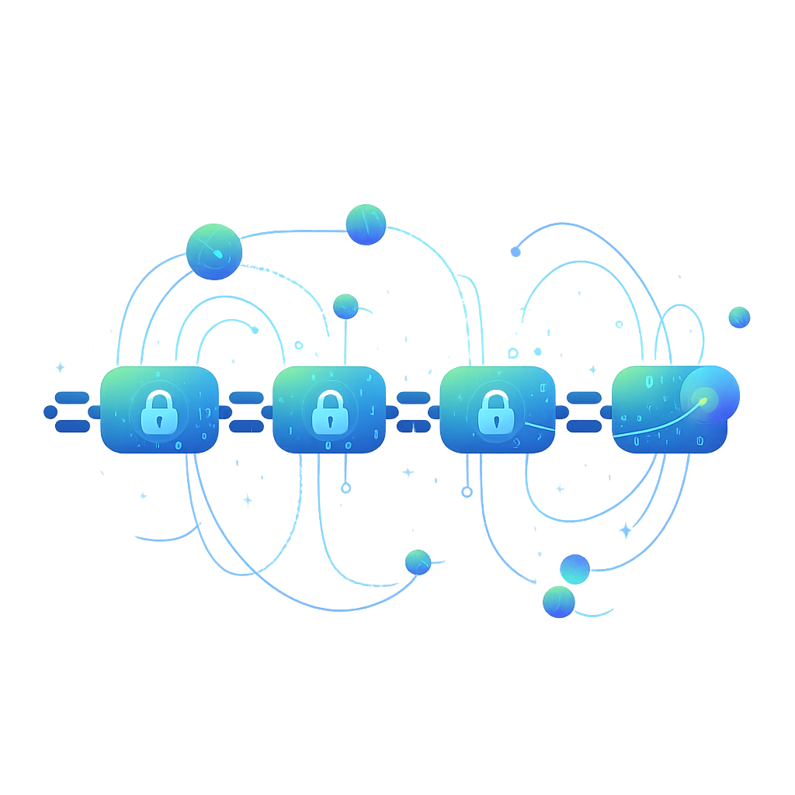

La Blockchain
La tecnología Blockchain (cadena de bloques) es esencialmente un libro de contabilidad digital, distribuido y descentralizado, que registra transacciones o cualquier tipo de datos de forma segura e inmutable. Piensa en ella como una cadena de bloques de información, donde cada "bloque" contiene un conjunto de transacciones validadas, y una vez que un bloque se añade a la cadena, es extremadamente difícil modificarlo o eliminarlo sin que todo el mundo lo note. Lo que hace a Blockchain tan revolucionaria es su naturaleza descentralizada: no hay una autoridad central única que controle la red. En su lugar, múltiples participantes (nodos) mantienen una copia idéntica del libro de contabilidad, y cada nueva transacción debe ser verificada y acordada por la mayoría de estos participantes antes de ser añadida a un nuevo bloque. Esta característica garantiza una seguridad y transparencia sin precedentes, eliminando la necesidad de intermediarios de confianza y reduciendo el riesgo de fraude o manipulación. Va más allá de las criptomonedas, encontrando aplicaciones en la gestión de cadenas de suministro, registros médicos, votación electrónica y derechos de autor.
Puntos Clave
- Descentralización
- Inmutabilidad
- Seguridad Criptográfica
- Transparencia
- Consenso
- Aplicaciones Diversas